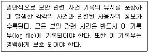
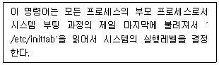
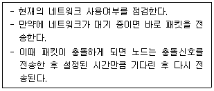
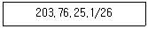
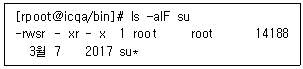
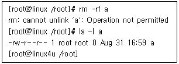

인터넷보안전문가-2급 (2021-10-24 기출문제)
1과목: 정보보호개론
1. IPSec 프로토콜에 대한 설명으로 옳지 않은 것은?
- 네트워크 계층인 IP 계층에서 보안 서비스를 제공하기 위한 보안 프로토콜이다.
- 기밀성 기능은 AH(Authentication Header)에 의하여 제공되고, 인증 서비스는 ESP(Encapsulating Security Payload) 에 의하여 제공된다.
- 보안 연계(Security Association)는 사용된 인증 및 암호 알고리즘, 사용된 암호키, 알고리즘의 동작 모드 그리고 키의 생명 주기 등을 포함한다.
- 키 관리는 수동으로 키를 입력하는 수동방법과 IKE 프로토콜을 이용한 자동방법이 존재한다.
(정답률: 43%)

2. 비대칭형 암호화 방식은?
- RC2
- SEED
- DES
- Diffie-Hellman
(정답률: 41%)
3. 암호 프로토콜 서비스에 대한 설명 중 옳지 않은 것은?
- 비밀성 : 자료 유출의 방지
- 접근제어 : 프로그램 상의 오류가 발생하지 않도록 방지
- 무결성 : 메시지의 변조를 방지
- 부인봉쇄 : 송수신 사실의 부정 방지
(정답률: 67%)
4. 5명의 사용자가 대칭키(Symmetric Key)를 사용하여 주고받는 메시지를 암호화하기 위해서 필요한 키의 총 개수는?
- 2개
- 5개
- 7개
- 10개
(정답률: 64%)
5. 공개키 인증서에 대한 설명 중 옳지 않은 것은?
- 공개키 인증서는 주체의 이름과 공개키를 암호학적으로 연결하여, 주체의 공개키에 대한 무결성과 인증성을 제공하기 위한 데이터 구조이다.
- 공개키 인증서를 관리하는 체계가 공개키 기반구조(PKI : Public-Key Infrastructure)이다.
- 공개키 인증서의 주요 필드는 일련번호, 주체 이름, 주체 공개키, 발행자 이름, 발행자 서명 알고리즘 등을 포함한다.
- 공개키 인증서는 한번 발급되고 나면 유효기간 동안에 계속 사용되어야 한다.
(정답률: 63%)
6. 서버를 안전하게 유지하는 방법으로 옳지 않은 것은?
- 운영체제를 정기적으로 패치하고, 데몬을 최신 버전으로 갱신하여 설치한다.
- 불필요한 SUID 프로그램을 제거한다.
- 침입차단시스템의 정책을 적절하게 적용하여 내부 자원을 보호한다.
- 사용자의 편리성과 가용성을 위하여 시스템이 제공하는 모든 데몬들을 설치하여 사용한다.
(정답률: 81%)
7. 대칭형 암호화 방식의 특징으로 옳지 않은 것은?
- 처리 속도가 빠르다.
- RSA와 같은 키 교환 방식을 사용한다.
- 키의 교환 문제가 발생한다.
- SSL과 같은 키 교환 방식을 사용한다.
(정답률: 41%)
8. SEED(128 비트 블록 암호 알고리즘)의 특성으로 옳지 않은 것은?
- 데이터 처리단위는 8, 16, 32 비트 모두 가능하다.
- 암ㆍ복호화 방식은 공개키 암호화 방식이다.
- 입출력의 크기는 128 비트이다.
- 라운드의 수는 16 라운드이다.
(정답률: 50%)
9. 정보 보호를 위한 컴퓨터실의 보호 설비 대책으로 거리가 먼 것은?
- 컴퓨터실은 항상 남향으로 하고 태양빛이 잘 들게 한다.
- 화재대비를 위해 소화기를 설치하고 벽 내장재를 방화재나 방열재로 내장한다.
- 출입문에 보안 장치를 하고 감시 카메라 등 주야간 감시 대책을 수립한다.
- 컴퓨터실은 항상 일정한 온도와 습도를 유지하게 한다.
(정답률: 68%)
10. 다음 내용은 보안 운영체제의 특정한 보안기능에 대해 설명한 것이다. 어떤 기능인가?

- 사용자 식별 또는 인증
- 감사 및 감사 기록
- 강제적/임의적 접근 통제
- 침입탐지
(정답률: 67%)
2과목: 운영체제
11. 아파치 데몬으로 웹서버를 운영하고자 할 때 반드시 선택해야하는 데몬은?
- httpd
- dhcpd
- webd
- mysqld
(정답률: 72%)
12. 다음은 어떤 명령어에 대한 설명인가?

- runlevel
- init
- nice
- halt
(정답률: 74%)
13. Linux에서 현재 사용하고 있는 쉘(Shell)을 확인해 보기 위한 명령어는?
- echo $SHELL
- vi $SHELL
- echo &SHELL
- vi &SHELL
(정답률: 66%)
14. 다음 중 ′/proc′에 관한 설명으로 거리가 먼 것은?
- 하드디스크 상에 적은 양의 물리적인 용량을 갖고 있다.
- 만약 파일 시스템 정보를 보고자 한다면 ′cat /proc/filesystems′ 명령을 실행하면 된다.
- 이 디렉터리에 존재하는 파일들은 커널에 의해서 메모리에 저장된다.
- 이 디렉터리에는 시스템의 각종 프로세서, 프로그램정보 그리고 하드웨어 적인 정보들이 저장된다.
(정답률: 40%)
15. 커널의 대표적인 기능으로 옳지 않은 것은?
- 파일 관리
- 기억장치 관리
- 명령어 처리
- 프로세스 관리
(정답률: 66%)
16. Linux 파일 시스템의 마운팅과 논리적 계층 구조에 관련된 내용이라 할 수 없는 것은?
- Linux는 모든 블록 장치에 존재하는 파일 시스템들을 마운트하여 사용한다.
- 파일 시스템이 존재하는 논리적인 파티션을 소스(Source)하고, 논리적 파일계층 구조에서 위치할 경로를 대상으로 마운트 시킨다.
- 마운트의 기본 디렉터리는 ′/var′이다.
- 제한된 디스크 공간을 여러 사용자가 공유하는 경우에 쿼터의 사용이 필요하다.
(정답률: 67%)
17. IIS 웹 서버를 설치한 다음에는 기본 웹사이트 등록정보를 수정하여야 한다. 웹사이트에 접속하는 동시 접속자수를 제한하려고 할때 어느 부분을 수정해야 하는가?
- 성능 탭
- 연결 수 제한
- 연결 시간 제한
- 문서 탭
(정답률: 72%)
18. vi 에디터 사용 중 명령 모드로 변환할 때 사용하는 키는?
- Esc
- Enter
- Alt
- Ctrl
(정답률: 64%)
19. Windows Server에서 자동으로 호스트의 네트워크 환경을 설정할 수 있는 서비스는?
- IIS(Internet Information Server)
- FTP(File Transfer Protocol)
- DHCP(Dynamic Host Configuration Protocol)
- DNS(Domain Name System)
(정답률: 72%)
20. DNS(Domain Name System) 서버를 처음 설치하고 가장 먼저 만들어야 하는 데이터베이스 레코드는?
- CNAME(Canonical Name)
- HINFO(Host Information)
- PTR(Pointer)
- SOA(Start Of Authority)
(정답률: 64%)
21. Linux에서 ′ls -al′ 명령에 의하여 출력되는 정보로 옳지 않은 것은?
- 파일의 접근허가 모드
- 파일 이름
- 소유자명, 그룹명
- 파일의 소유권이 변경된 시간
(정답률: 64%)
22. Windows Server에서 감사정책을 설정하고 기록을 남길 수 있는 그룹은?
- Administrators
- Security Operators
- Backup Operators
- Audit Operators
(정답률: 60%)
23. Linux 시스템 명령어 중 디스크의 용량을 확인하는 명령어는?
- cd
- df
- cp
- mount
(정답률: 70%)
24. Linux 파일 시스템의 기본 구조 중 파일에 관한 중요한 정보를 싣는 곳은?
- 부트 블록
- i-node 테이블
- 슈퍼 블록
- 실린더 그룹 블록
(정답률: 59%)
25. Windows Server에서 FTP 서비스에 대한 설명으로 옳지 않은 것은?
- 웹 사이트가 가지고 있는 도메인을 IP Address로 바꾸어 주는 서비스를 말한다.
- IIS에서 기본적으로 제공하는 서비스이다.
- 기본 FTP 사이트는 마우스 오른쪽 버튼을 눌러 등록정보를 수정할 수 있다.
- FTP 서비스는 네트워크를 통하여 파일을 업로드 및 다운로드 할 수 있는 서비스를 말한다.
(정답률: 50%)
26. Windows Server의 DNS 서비스 설정에 관한 설명으로 옳지 않은 것은?
- 정방향 조회 영역 설정 후 반드시 역방향 조회 영역을 설정해 주어야 한다.
- Windows Server는 고정 IP Address를 가져야 한다.
- Administrator 권한으로 설정해야 한다.
- 책임자 이메일 주소의 at(@)은 마침표(.)로 대체된다.
(정답률: 57%)
27. Linux 시스템 파일의 설명으로 옳지 않은 것은?
- /etc/passwd - 사용자 정보 파일
- /etc/fstab - 시스템이 시작될 때 자동으로 마운트 되는 파일 시스템 목록
- /etc/motd - 텔넷 로그인 전 나타낼 메시지
- /etc/shadow - 패스워드 파일
(정답률: 58%)
28. Linux의 VI 편집기에서 수정하던 파일을 저장하지 않고 종료 시키는 명령은?
- :q!
- :w!
- :WQ!
- :Wq!
(정답률: 76%)
29. ′/data′ 라는 디렉터리는 40개의 텍스트 파일과 2개의 디렉터리가 들어있는 상태이다. root 유저로 로그인 한 후 alias 목록을 확인한 결과 alias rm=′rm -i′ 라고 지정되어 있었다. root 유저가 이 ′data′ 라는 디렉터리를 확인 메시지 없이 한번에 지우려면 다음 중 어떤 명령을 내려야 하는가?
- rm data
- rm –r data
- rm –f data
- rm -rf data
(정답률: 69%)
30. Linux에서 ′shutdown -r now′ 와 같은 효과를 내는 명령어는?
- halt
- reboot
- restart
- poweroff
(정답률: 66%)
3과목: 네트워크
31. 프로토콜 스택에서 가장 하위 계층에 속하는 것은?
- IP
- TCP
- HTTP
- UDP
(정답률: 70%)
32. TCP와 UDP의 차이점을 설명한 것 중 옳지 않은 것은?
- TCP는 전달된 패킷에 대한 수신측의 인증이 필요하지만 UDP는 필요하지 않다.
- TCP는 대용량의 데이터나 중요한 데이터 전송에 이용 되지만 UDP는 단순한 메시지 전달에 주로 사용된다.
- UDP는 네트워크가 혼잡하거나 라우팅이 복잡할 경우에는 패킷이 유실될 우려가 있다.
- UDP는 데이터 전송 전에 반드시 송수신 간의 세션이 먼저 수립되어야 한다.
(정답률: 59%)
33. 네트워크 주소 중 B Class 기반의 IP Address로 옳지 않은 것은?
- 139.39.60.101
- 203.34.1.12
- 187.124.70.87
- 155.98.200.100
(정답률: 64%)
34. 전송을 받는 개체 발송지에서 오는 데이터의 양이나 속도를 제한하는 프로토콜의 기능은?
- 에러제어
- 순서제어
- 흐름제어
- 접속제어
(정답률: 74%)
35. 다음의 매체 방식은?

- Token Passing
- Demand Priority
- CSMA/CA
- CSMA/CD
(정답률: 60%)
36. TCP 헤더 필드의 내용으로 옳지 않은 것은?
- TTL(Time To Live)
- 발신지 포트번호
- 윈도우 크기
- Checksum
(정답률: 52%)
37. 네트워크 관리자나 라우터가 IP 프로토콜의 동작 여부를 점검하고, 호스트로의 도달 가능성을 검사하기 위한 ICMP 메시지 종류는?
- Parameter Problem
- Timestamp Request/Response
- Echo Request/Response
- Destination Unreachable
(정답률: 58%)
38. OSI 7 Layer 중 응용 계층간의 정보 표현 방법의 상이를 극복하기 위한 계층으로, 보안을 위한 암호화/복호화 방법과 효율적인 전송을 위한 압축 기능이 들어 있는 계층은?
- 데이터 링크 계층
- 세션 계층
- 네트워크 계층
- 표현 계층
(정답률: 50%)
39. 아래 내용에 해당하는 서브넷 마스크 값은?

- 255.255.255.192
- 255.255.255.224
- 255.255.255.254
- 255.255.255.0
(정답률: 66%)
40. 통신 에러제어는 수신측이 에러를 탐지하여 송신자에게 재전송을 요구하는 ARQ(Automatic Repeat Request)를 이용하게 된다. ARQ 전략으로 옳지 않은 것은?
- Windowed Wait and Back ARQ
- Stop and Wait ARQ
- Go Back N ARQ
- Selective Repeat ARQ
(정답률: 43%)
41. 홉 카운팅 기능을 제공하는 라우팅 프로토콜은?
- SNMP
- RIP
- SMB
- OSPF
(정답률: 64%)
42. IP Address의 부족과 Mobile IP Address 구현문제로 차세대 IP Address인 IPv6가 있다. IPv6는 몇 비트의 Address 필드를 가지고 있는가?
- 32 비트
- 64 비트
- 128 비트
- 256 비트
(정답률: 71%)
43. 인터넷에서는 네트워크와 컴퓨터들을 유일하게 식별하기 위하여 고유한 주소 체계인 인터넷 주소를 사용한다. 인터넷 주소에 대한 설명으로 잘못된 것은?
- 인터넷 IP Address는 네트워크 주소와 호스트 주소로 구성된다.
- TCP/IP를 사용하는 공인(Public) 네트워크에서 각 IP Address는 유일하다.
- 인터넷 IP Address는 네트워크의 크기에 따라 구분되어 지고, 그 중 A Class는 가장 많은 호스트를 가지고 있는 큰 네트워크로 할당된다.
- 인터넷 IPv4 Address는 64bit로 이루어지며, 보통 16bit씩 4부분으로 나뉜다.
(정답률: 54%)
44. Broadcast and Multicast의 종류와 그에 대한 설명으로 옳지 않은 것은?
- Unicast - 메시지가 임의의 호스트에서 다른 호스트로 전송되는 방식을 말한다.
- Broadcast - 메시지가 임의의 호스트에서 네트워크상의 모든 호스트에 전송되는 방식을 말한다.
- Multicast - 메시지가 임의의 호스트에서 네트워크 상의 특정 호스트(Group)에 전송되는 방식을 말한다
- Broadcast - 메시지가 네트워크 상의 모든 호스트로부터 임의의 호스트에 전송되는 방식을 말한다.
(정답률: 50%)
45. TCP/IP 프로토콜을 이용해서 서버와 클라이언트가 통신을 할 때, ′netstat′ 명령을 이용해 현재의 접속 상태를 확인할 수 있다. 클라이언트와 서버가 현재 올바르게 연결되어 통신 중인 경우 ′netstat′으로 상태를 확인하였을 때 나타나는 메시지는?
- SYN_PCVD
- ESTABLISHED
- CLOSE_WAIT
- CONNECTED
(정답률: 58%)
4과목: 보안
46. HTTP Session Hijacking 공격 방법으로 옳지 않은 것은?
- 공격자는 Session을 가로 채기 위해 웹 서버와 웹 클라이언트의 트래픽을 직접적으로 Sniffing하는 방법
- 웹 서버 상에 공격 코드를 삽입하고 사용자의 실행을 기다리는 방법
- Session ID 값을 무작위 추측 대입(Brute-Force Guessing)함으로써 공격하는 방법
- 웹 서버의 서비스를 중단 시키고, 공격자가 서버에 도착하는 모든 패킷을 가로채는 방법
(정답률: 38%)
47. 버퍼 오버플로우(Buffer Overflow)의 설명으로 옳지 않은 것은?
- 지정된 버퍼(Buffer)의 크기보다 더 많은 데이터를 입력해서 프로그램이 비정상적으로 동작하도록 만드는 것을 의미함
- 대부분의 경우 버퍼가 오버플로우 되면 프로그램이 비정상적으로 종료되면서 루트 권한을 획득할 수 있음
- 버퍼가 오버플로우 되는 순간에 사용자가 원하는 임의의 명령어를 수행시킬 수 있음
- 버퍼 오버플로우를 방지하기 위해서는 시스템에 최신 패치를 유지해야 함
(정답률: 46%)
48. SYN 플러딩 공격에 대한 설명으로 올바른 것은?
- TCP 프로토콜의 3-way handshaking 방식을 이용한 접속의 문제점을 이용하는 방식으로, IP 스푸핑 공격을 위한 사전 준비 단계에서 이용되는 공격이며, 서버가 클라이언트로부터 과도한 접속 요구를 받아 이를 처리하기 위한 구조인 백로그(backlog)가 한계에 이르러 다른 클라이언트로부터 오는 새로운 연결 요청을 받을 수 없게 하는 공격이다.
- 함수의 지역 변수에 매개변수를 복사할 때 길이를 확인하지 않은 특성을 이용하는 공격 방법이다.
- 네트워크에 연결된 호스트들의 이용 가능한 서비스와 포트를 조사하여 보안 취약점을 조사하기 위한 공격방법이다.
- 패킷을 전송할 때 암호화하여 전송하는 보안 도구이다.
(정답률: 60%)
49. 침입차단시스템에 대한 설명 중 옳지 않은 것은?
- 침입차단시스템은 내부 사설망을 외부의 인터넷으로부터 보호하기 위한 장치이다.
- 패킷 필터링 침입차단시스템은 주로 발신지와 목적지 IP Address와 발신지와 목적지 포트 번호를 바탕으로 IP 패킷을 필터링한다.
- 침입차단시스템의 유형은 패킷 필터링 라우터, 응용 레벨 게이트웨이, 그리고 회선 레벨 게이트웨이 방법 등이 있다.
- 침입차단시스템은 네트워크 사용에 대한 로깅과 통계자료를 제공할 수 없다.
(정답률: 74%)
50. Linux 파일 시스템에 대한 사용자에 속하지 않는 것은?
- 소유자 : 파일이나 디렉터리를 처음 만든 사람
- 사용자 : 현재 로그인한 사용자
- 그룹 : 사용자는 어느 특정 그룹에 속하며 이 그룹에 속한 다른 사람들을 포함
- 다른 사용자 : 현재 사용자 계정을 가진 모든 사람
(정답률: 45%)
51. SSH(Secure Shell)에 대한 설명으로 옳지 않은 것은?
- 안전하지 못한 네트워크에서 안전하게 통신할 수 있는 기능과 강력한 인증방법을 제공한다.
- 문자를 암호화하여 IP Spoofing, DNS Spoofing으로부터 보호할 수 있다.
- 쌍방 간 인증을 위해 Skipjack 알고리즘이 이용된다.
- 네트워크의 외부 컴퓨터에 로그인 할 수 있고 원격 시스템에서 명령을 실행하고 다른 시스템으로 파일을 복사할 수 있도록 해주는 프로그램이다.
(정답률: 67%)
52. 서비스 거부 공격(Denial of Service)의 특징으로 옳지 않은 것은?
- 공격을 통해 시스템의 정보를 몰래 빼내가거나, 루트 권한을 획득할 수 있다.
- 시스템의 자원을 부족하게 하여 원래 의도된 용도로 사용하지 못하게 하는 공격이다.
- 다수의 시스템을 통한 DoS 공격을 DDoS(Distributed DoS)라고 한다.
- 라우터, 웹, 전자 우편, DNS 서버 등 모든 네트워크 장비를 대상으로 이루어질 수 있다.
(정답률: 54%)
53. Windows Server의 이벤트뷰어에서 중요 로그 유형에 해당하지 않은 것은?
- Firewall Log
- Security Log
- System Log
- Application Log
(정답률: 32%)
54. Linux에서 각 사용자의 가장 최근 로그인 시간을 기록하는 로그 파일은?
- cron
- messages
- netconf
- lastlog
(정답률: 68%)
55. Linux 시스템에서 ′chmod 4771 a.txt′ 명령어를 수행한 후 변경된 사용 권한으로 올바른 것은?
- -rwsrwx—x
- -rwxrws—x
- -rwxrwx—s
- -rwxrwx--x
(정답률: 64%)
56. 대형 응용 프로그램을 개발하면서 전체 시험실행을 할 때 발견되는 오류를 쉽게 해결하거나 처음부터 중간에 내용을 볼 수 있는 부정루틴을 삽입해 컴퓨터의 정비나 유지 보수를 핑계 삼아 컴퓨터 내부의 자료를 뽑아가는 해킹 행위는?
- Trap Door
- Asynchronous Attacks
- Super Zapping
- Salami Techniques
(정답률: 61%)
57. Linux에서 Nmap의 옵션 중 상대방의 OS를 알아내는 옵션은?
- [root@icqa bin]#./nmap -O www.target.com
- [root@icqa bin]#./nmap -I www.target.com
- [root@icqa bin]#./nmap -sS www.target.com
- [root@icqa bin]#./nmap -sP www.target.com
(정답률: 50%)
58. 아래와 같이 초기설정이 되어있는 ′/bin/su′ 명령어가 있다. Linux 서버의 내부 보안을 위해 ′/bin/su′ 명령어를 root에게는 모든 권한을 ′wheel′이라는 그룹에게는 실행권한만을 부여하려고 한다. 이 과정 중에 올바르지 않은 사항은?

- [root@icqa /bin]#chmod 4710 /bin/su
- [root@icqa /bin]#chown root /bin/su
- [root@icqa /bin]#chgrp wheel /bin/su
- [root@icqa /bin]#chown -u root -g wheel /bin/su
(정답률: 32%)
59. 스머프 공격(Smurf Attack)에 대한 설명으로 올바른 것은?
- 두 개의 IP 프래그먼트를 하나의 데이터 그램인 것처럼 하여 공격 대상의 컴퓨터에 보내면, 대상 컴퓨터가 받은 두 개의 프래그먼트를 하나의 데이터 그램으로 합치는 과정에서 혼란에 빠지게 만드는 공격이다.
- 서버의 버그가 있는 특정 서비스의 접근 포트로 대량의 문자를 입력하여 전송하면, 서버의 수신 버퍼가 넘쳐서 서버가 혼란에 빠지게 만드는 공격이다.
- 서버의 SMTP 서비스 포트로 대량의 메일을 한꺼번에 보내고, 서버가 그것을 처리하지 못하게 만들어 시스템을 혼란에 빠지게 하는 공격이다.
- 출발지 주소를 공격하고자 하는 컴퓨터의 IP Address로 지정한 후, 패킷신호를 네트워크 상의 컴퓨터에 보내게 되면, 패킷을 받은 컴퓨터들이 반송 패킷을 다시 보내게 되는데, 이러한 원리를 이용하여 대상 컴퓨터에 갑자기 많은 양의 패킷을 처리하게 함으로써 시스템을 혼란에 빠지게 하는 공격이다.
(정답률: 57%)
60. Linux에서 root 권한 계정이 ′a′ 라는 파일을 지우려 했을때 나타난 결과이다. 이 파일을 지울 수 있는 방법은?

- 파일크기가 ′0′ 바이트이기 때문에 지워지지 않으므로, 파일에 내용을 넣은 후 지운다.
- 현재 로그인 한 사람이 root가 아니므로 root로 로그인한다.
- chmod 명령으로 쓰기금지를 해제한다.
- chattr 명령으로 쓰기금지를 해제한다.
(정답률: 57%)